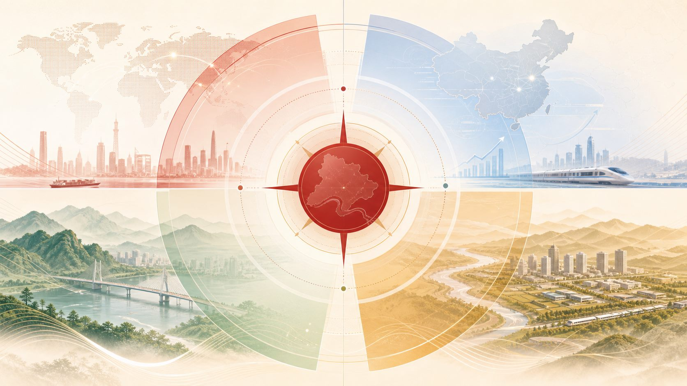
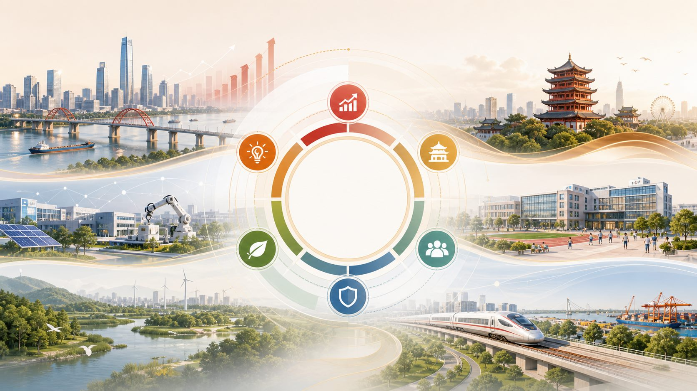

国际环境：变局与科技革命并行
世界百年变局加速演进，新一轮科技革命和产业变革加速突破，带来培育新质生产力、重构供给体系的战略机遇；同时，全球政治经济格局调整、国际经贸秩序挑战和世界经济增长动能不足，也增加了外部不确定性。
第一章围绕“关键时期”展开：先判断黄冈面对的外部环境，再说明“依托都市圈、辐射大别山”的战略位置，最后落到“十五五”时期的总体思路、基本原则和主要目标。
这一节的关键，不是罗列国际国内形势，而是给黄冈未来五年的发展判断定调：战略机遇和风险挑战并存，不确定难预料因素增多，但总体上机遇大于挑战、有利条件强于不利因素。
世界百年变局加速演进，新一轮科技革命和产业变革加速突破，带来培育新质生产力、重构供给体系的战略机遇；同时，全球政治经济格局调整、国际经贸秩序挑战和世界经济增长动能不足，也增加了外部不确定性。
我国经济基础稳、优势多、韧性强、潜能大，制度优势、超大规模市场优势、完整产业体系优势和人才资源优势更加彰显。但供需格局、要素条件和增长模式也在发生深刻变化。
湖北处于战略地位整体跃升期、高质量发展关键转型期、综合优势系统重塑期、基本建成支点加速冲刺期，内需主导、消费拉动、内生增长的特点和优势进一步彰显。
长江经济带、中部地区崛起、革命老区振兴发展等国家战略叠加融合，黄冈的好山好水、好文化、好物产、好区位进一步凸显。但比较优势发挥不充分、对内整合力度不大、对外开放水平不高，仍是必须破解的问题。
外部战略窗口正在打开，内部优势正在显现。黄冈需要在整合、开放、产业联动和创新能力上持续发力，让资源优势、区位优势真正转化为发展优势。

这一节把黄冈放到湖北支点建设和革命老区振兴的大局里看。黄冈作为武汉都市圈重要组成部分，要承担承接武汉功能转移、整合大别山区资源、辐射带动周边地区高质量发展的历史使命。
科创资源、产业外溢、市场需求、平台功能，为黄冈提供外部赋能。
生态资源、特色物产、红色文化、老区振兴需求，构成黄冈辐射带动的空间。
承接武汉功能转移，在都市圈协同中提升黄冈产业、平台和公共服务能级。
整合大别山区资源，把分散的生态、物产、文化和空间资源组织成发展合力。
扩大支点向东、向北的辐射力和影响力，带动周边地区协同发展。
推动发展能级、速度、质效、后劲显著提升，为黄冈基本实现现代化奠定基础。
第三节的重点不是“黄冈离武汉近”，而是“黄冈连接武汉都市圈与大别山”。一头是大需求、科创和产业外溢，一头是大供给、资源和老区振兴，黄冈要成为两者之间的高效链接节点。
第四节从指导思想、必须遵循的原则和主要目标三个层面展开，形成“战略牵引、原则支撑、目标落地”的发展体系。
以推动高质量发展为主题，以改革创新为根本动力，深入实施“依托都市圈、辐射大别山”发展战略。
加快建设武汉都市圈协同发展重要功能区、全国革命老区高质量发展先行区。
经济增长保持适当速度，产业结构全面优化，新型工业化、信息化、城镇化、农业现代化取得重大进展，县域经济不断壮大。
把好山好水好文化转化为生态产品、文化产品和服务消费，把好物产转化为品牌和产业优势，把好区位转化为枢纽经济和供应链优势。
开放平台能级和开放枢纽辐射作用明显提升，科技创新和产业创新深度融合，持续塑造发展新动能新优势。
大别山精神、红色文化、东坡文化、中医药文化、戏曲文化等在保护传承和活化利用中焕发生机。
就业、收入、社会保障、基本公共服务、县城承载能力、城乡融合和乡村振兴都要取得新进展。
绿色生产生活方式基本形成，生态环境质量全面改善，重点领域风险有效防范化解，安全发展基础更加牢固。

第二节明确发展环境和形势判断，第三节明确黄冈在支点建设和老区振兴中的战略位置，第四节明确总体思路、基本原则和主要目标。三节内容共同指向一个核心任务：把比较优势转化为高质量发展的新动能。